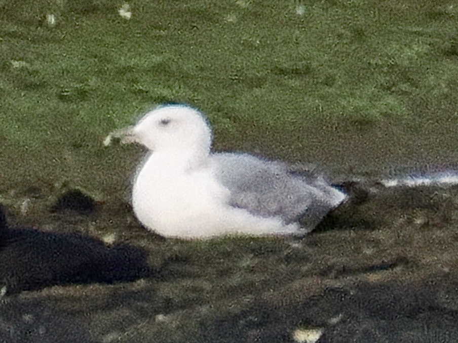

Caspian Gull
Larus cachinnans
Order: Charadriiformes
Family: Laridae

One thought to be a subspecies of European Herring Gull. As much as I want to be the "um, actually" know-it-all, I must admit that I am utterly clueless about this gull. There is a 40-page document online about how to ID this species, but after reading it, I still have no idea. This bird was found by another birder while I was out and about, and I shall take his word for that.